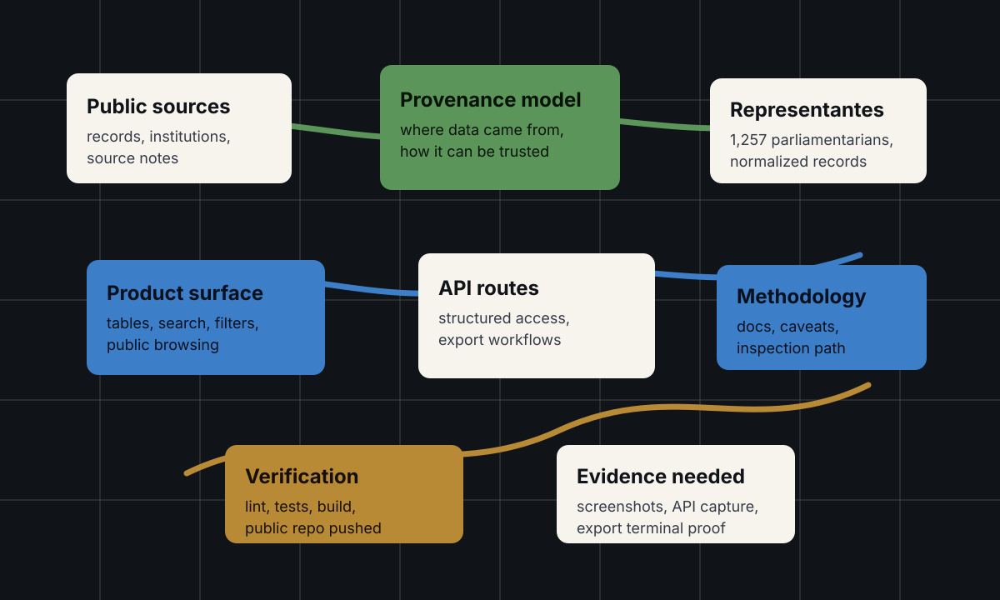
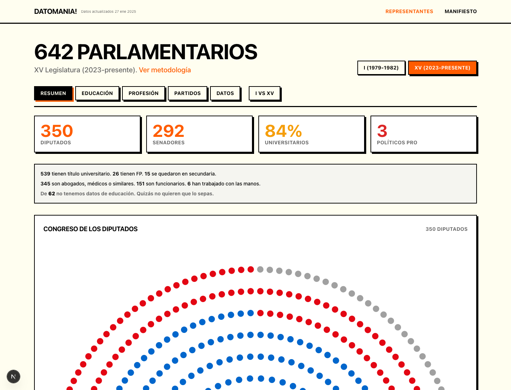
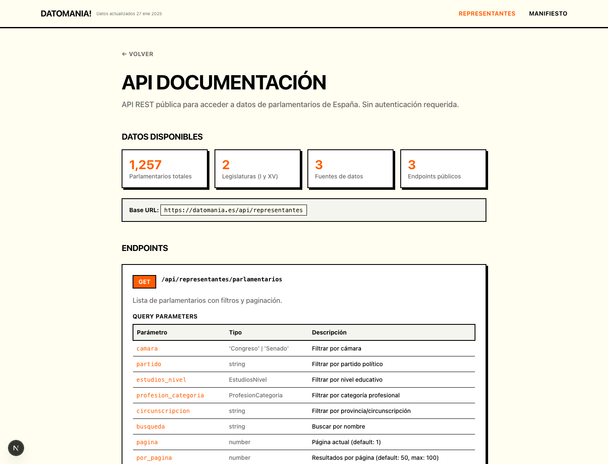
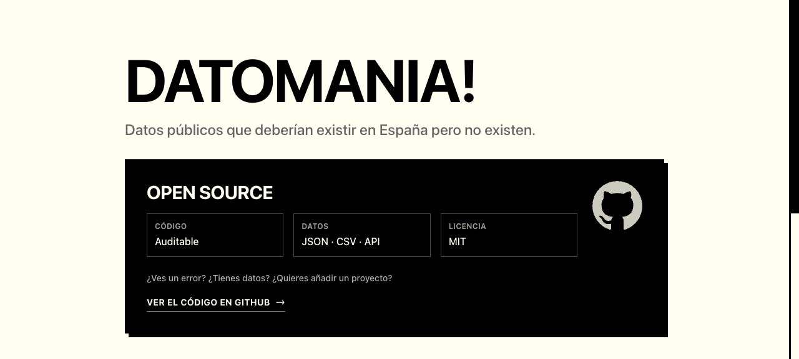

Problem
Public-interest data often technically exists, but is hard to browse, verify, export, or use in software. A useful civic-data product needs more than a table: it needs provenance, methodology, API access, and a product surface that makes the data understandable.
What I Built
Datomania is documented as a public-data project around information that should exist in Spain. The rewritten README frames it around the Representantes dataset, 1,257 parliamentarians, provenance modeling, public API/export routes, architecture, methodology, status, and portfolio context.
System Architecture




https://datomania.info. It proves the public product is reachable, open-source positioned, and linked to inspectable code and data surfaces.
Technical Decisions
- Frame the project around public usefulness instead of only data collection.
- Make provenance and methodology part of the product surface.
- Expose API/export routes so the dataset can support downstream workflows.
- Keep the README explicit about architecture and verification, not just a product description.
What This Proves
Datomania shows product judgment in a less glamorous but highly practical domain: turning messy public information into a browsable, inspectable, reusable data product with clear provenance and engineering discipline.